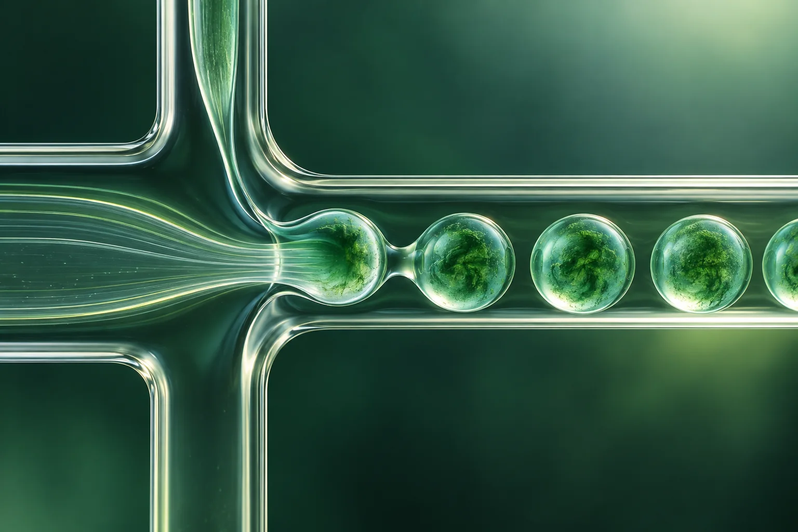

STUMAT
STUMATCan the additive change film behaviour?
The project will model additive–PHBV interactions and measure film mechanics, barriers and migration.
Three research work packages connect green chemistry and modelling with microencapsulation, film development and a spoilage demonstration.
This illustration simplifies the proposed research sequence. Each step will be tested before moving to the next.
These conceptual animations explain the questions STUMAT will investigate. They are not simulations or experimental measurements.
The project will model additive–PHBV interactions and measure film mechanics, barriers and migration.
Droplet millifluidics is proposed to prepare indicator-loaded beads for application to the film.
The planned food model compares film colour with pH and spoilage measures. Colours shown here are illustrative.
The first phase examines ferulic-acid-derived additives that may improve flexibility while preserving useful interactions with PHBV. Modelling guides material selection before pilot film preparation.
Green chemistry × modelling × materialsSynthesise and characterise ferulic-acid-based compounds; compare new structures with a reference additive.
Use molecular dynamics and finite element analysis to investigate compatibility, free volume and mechanical response.
Blend PHBV and selected additives, form films, then assess tensile behaviour, oxygen and water-vapour barriers and additive migration in food simulants.

Use droplet millifluidics to encapsulate Spirulina-derived extract in alginate; study bead size, morphology, encapsulation and stability.
Apply microbeads to the film surface, optimise coverage and examine the effect of indicator loading on film performance.
Measure indicator release in simulated food-contact conditions and compare film properties before and after release.
Spirulina-derived phycocyanin is sensitive to its environment. The proposed approach protects the extract in alginate microbeads and investigates how it behaves after integration with PHBV.
Droplet millifluidics × encapsulation × releaseThe proposal uses cherry tomatoes as a model food. Film colour is compared with pH and polyphenol oxidase activity during storage to explore its potential as a spoilage indicator.
This is a research objective. A reliable spoilage signal has not yet been established by the project.